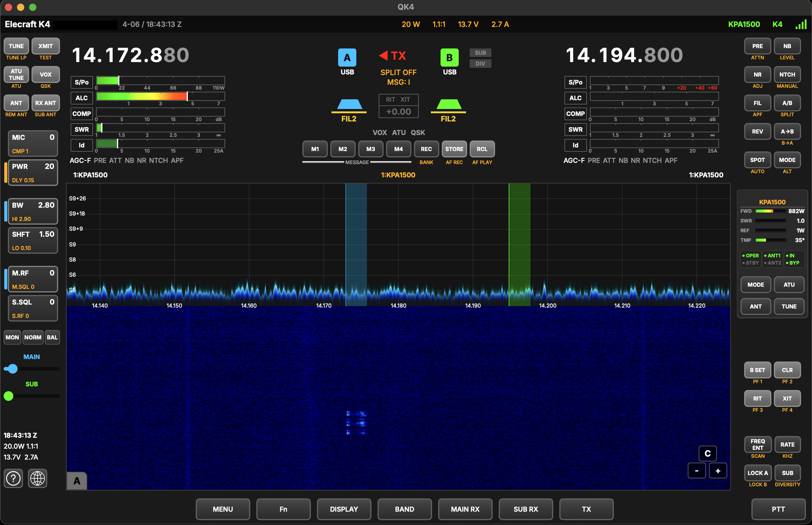

K4Controller
Remote control software for the Elecraft K4
Active Development — K4Controller is currently in beta.
Expect bugs and frequent updates as features are refined.
New releases and demos on YouTube @AI5QK — Follow for updates

The first fully cross-platform remote control application for the Elecraft K4. Built to bring the complete K4 operating experience — every control, meter, and display — to macOS, Windows, and Raspberry Pi. Operate your K4 from anywhere on your network, exactly as if you were sitting in front of it.
Loading release info…
No releases available yet. Check back soon.
About
K4Controller was created to fill a gap in the Elecraft ecosystem — a native, purpose-built remote control application that runs on any platform. No emulators, no workarounds, no compromises. Full spectrum and waterfall display, dual VFO control, audio streaming, and CW/voice operation over your local network.
Links
Requirements
| macOS |
macOS 14 (Sonoma) or later Apple Silicon (M1/M2/M3/M4) |
| Windows |
Windows 11, x64 VC++ Redistributable 2019+ |
| Raspberry Pi |
Pi 4 or 5, ARM64 Debian Trixie / Pi OS Bookworm+ |
Getting Started
| macOS |
Open the DMG and drag to Applications. Signed and notarized — no Gatekeeper warnings. |
| Windows |
Extract the ZIP and run K4Controller.exe.Install VC++ Redistributable if prompted. |
| Raspberry Pi |
Extract the tarball and run ./K4Controller/run.sh.First run requires sudo to install a udev rule for KPOD USB access. After that, sudo is not needed.
|